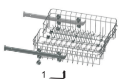
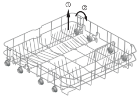

| 5. Зареждане на кошниците |
За най-добра работа на съдомиялната машина следвайте тези указания за зареждане на
кошниците. Възможно е характеристиките и външният вид на кошниците за съдове и кошниците
за прибори да се различават от тези на вашия модел.
Обърнете внимание на следното преди или след зареждане на кошниците на
съдомиялната машина
Почистете по-големите остатъци от храна. Не е необходимо да изплаквате съдовете под течаща
вода. Поставете съдовете в съдомиялната машина по следния начин:
-
Изделия, като например порцеланови и стъклени чаши, тенджери/тигани и др. се поставят с
лицевата част надолу.
-
Изделия с извивки или вдлъбнатини трябва да се слагат наклонени, така че водата да може да
се оттича от тях.
- Всички прибори трябва да се поставят здраво, така че да не се преобърнат.
- Те не трябва да пречат на въртенето на разпръскващите рамена по време на измиването.
Предмети, които са много дребни не трябва да се мият в съдомиялната машина, тъй като е
възможно да изпаднат от кошницата.
Изваждане на съдовете
За да предотвратите капенето на вода от горната кошница върху съдовете в долната кошница, ви
препоръчваме да изпразните първо долната и след това горната кошница.
Зареждане на
горната кошница
Горната кошница е
предназначена да
съдържа по-деликатни
и по-леки съдове като
стъклени чаши, чаши
за кафе и чай, както
и чинии, малки купи и
плитки тигани (ако не
са много замърсени).
Разположете чиниите
и съдовете за готвене
така, че да не се местят,
когато се обливат с вода.
Регулиране на горната кошница
Ако е необходимо, височината на горната кошница може да бъде регулирана, за да се остави
повече място за големи съдове, както на горната, така и на долната кошница. Височината на
горната кошница може да се регулира чрез поставяне на колелцата на различна височина на
релсите. Дългите прибори, приборите за сервиране, купите за салати и ножовете трябва да се
поставят на лавицата така, че да не пречат на въртенето на разпръскващите рамена. Лавицата
може да бъде сгъната или извадена, когато не е необходимо да се използва.

Зареждане на долната кошница
Препоръчваме ви да поставяте големите съдове, които са най-трудни за миене в долната
кошница: тенджери, тигани, капаци, чинии за сервиране и купи, както е показано на илюстрацията
по-долу.
За предпочитане е да поставяте чините и капаците по страните на кошницата, така че да не
блокират въртенето на горното разпръскващо рамо.
Тенджери, купи и др. трябва винаги да се поставят обърнати надолу. Дълбоките тенджери трябва
да се поставят наклонени, така че водата да може да се оттича от тях.
Долната кошница има сгъваеми шипове, така че да могат да се поставят по-големи или повече
тенджери и тигани.
* Долна кошница
Сгъваеми решетки
Сгъваемите решетки, състоящи от две
части, които се намират в долната кошница
на уреда ви, са създадени, за да можете
да поставяте големи предмети по-лесно,
например тенджери, тигани и др. Ако
желаете, всяка част може да се сгъне
отделно или всички могат да се сгънат и да
се получи повече пространство. Можете да
използвате сгъваемите решетки, като ги
вдигате или сгъвате.

* Опционално
Кошница за прибори
Приборите трябва да бъдат поставяни в кошницата за прибори с дръжките надолу. Ако
кошницата има странични отделения, лъжиците трябва да се поставят отделно в съответните
гнезда, особено дългите прибори трябва да бъдат разполагани в хоризонтална позиция отпред
на горната кошница.
За измиване в съдомиялната машина следните прибори/съдове
Не са подходящи
Прибори с дървени, порцеланови, рогови
или перлени дръжки.
Пластмасови предмети, които не са
устойчиви на високи температури.
Старинни прибори с лепени части, които
не са устойчиви на високи температури
Залепени прибори или чинии
Предмети от калай или мед
Чаши от оловно стъкло
Метални предмети, податливи на ръжда
Дървени подноси
Изделия, направени от синтетични влакна
.
.

ПРЕДУПРЕЖДЕНИЕ!
Не позволявайте някой от приборите да
се подава през дъното на кошницата.
Ограничено подходящи
Някои изделия от стъкло може да
помътнеят след голям брой измивания
Сребърните и алуминиевите части
имат склонност да се обезцветяват по
време на миене
Шарките на гланцираните съдове могат
да избледнеят, ако често се мият в
съдомиялна машина
ЗАБЕЛЕЖКА:
Не слагайте предмети, които са замърсени с пепел от цигари, восък, лак или боя.
Ако купувате нови чинии, се уверете, че са подходящи за съдомиялна машина.
ЗАБЕЛЕЖКА:
Не претоварвайте съдомиялната машина. Има място само за 13 стандартни
чинии. Не слагайте, чинии, които не са подходящи за измиване в съдомиялна машина.
Зареждане на прибори и чинии
Преди да сложите чиниите, трябва:
Да отстраните големите остатъци от храна
Да накиснете предварително съдовете със загоряла храна, за да се размекне.
Когато слагате чиниите и приборите, имайте предвид, че:
Чиниите и приборите не трябва да пречат на въртенето на разпръскващите рамена.
Поставяйте изделията с отвори в тях, като например порцеланови и стъклени чаши, тигани и др. с
отвора надолу, така че водата да не се събира в контейнера или дълбокото дъно.
Съдовете и приборите не трябва да се поставят един в друг или да се покриват
- За да не се повредят стъклените чаши, те не трябва да се докосват една с друга
- Поставяйте големите съдове, които са най-трудни за миене, в долната кошница
-
Горната кошница е предназначена за поставяне на по-деликатни и леки съдове, като например
стъклени чаши, чаши за кафе и чай
Внимание!
Ножовете с дълго острие, ако се поставят в изправена позиция, са потенциално опасни!
Дългите и/или остри прибори, като например ножове за обезкостяване, трябва да бъдат
разполагани хоризонтално в горната кошница
Повреждане на стъклени и други съдове
Възможни причини:
- Типа стъкло или процеса на производство. Химическия състав на миещия препарат.
- Температурата на водата и продължителността на програмата за измиване.
Препоръчителни мерки:
-
Използвайте стъклени или порцеланови чинии, които имат маркировка, че могат да се мият в
съдомиялна машина.
-
Използвайте щадящ миещ препарат с описание „нежен към съдовете“. Ако е необходимо,
потърсете повече информация от производителя на препарата.
- Изберете програма с ниска температура.
-
За да предотвратите повреди, изваждайте от съдомиялната стъклените съдове и приборите
непосредствено след края на програмата.
След измиването
Когато работният цикъл приключи, звуковият сигнал на съдомиялната ще прозвучи 6 пъти и
след това ще спре. Изключете уреда от бутона Power (включване/изключване), затворете крана
за водата и отворете вратата на съдомиялната. Изчакайте няколко минути, преди да извадите
съдовете, за да не докосвате съдовете и приборите, докато са все още горещи и са по-податливи
на счупване. Освен това те ще изсъхнат по-добре.
Отидете най-горе ↑ ↑ ↑
Отидете на предишната страница ←
Отидете на следващата страница →
Върнете се в началото ← ← ←